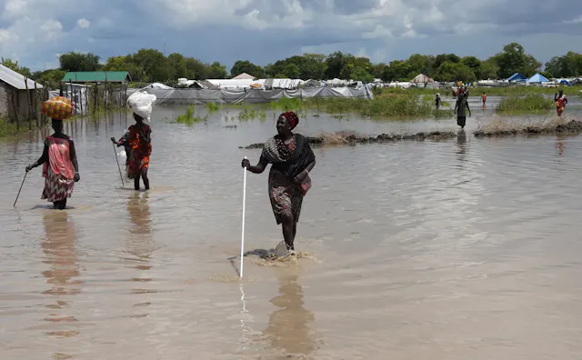
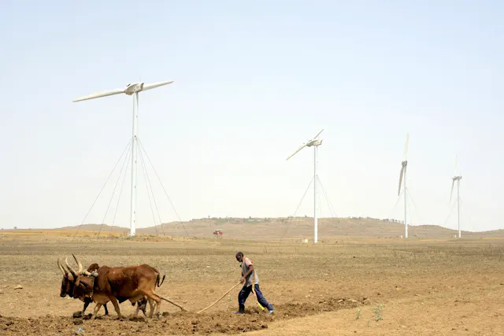
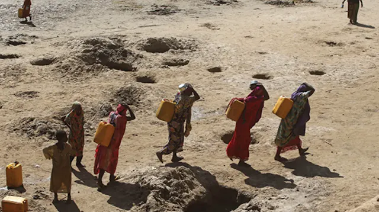
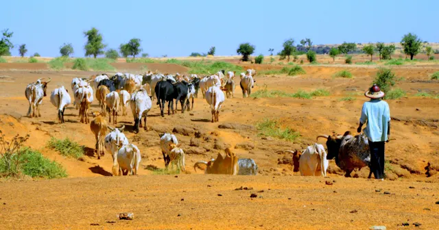
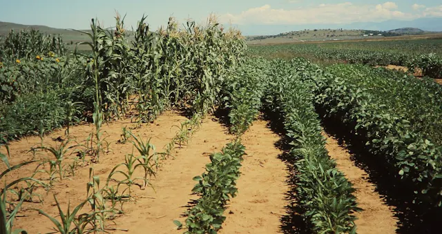
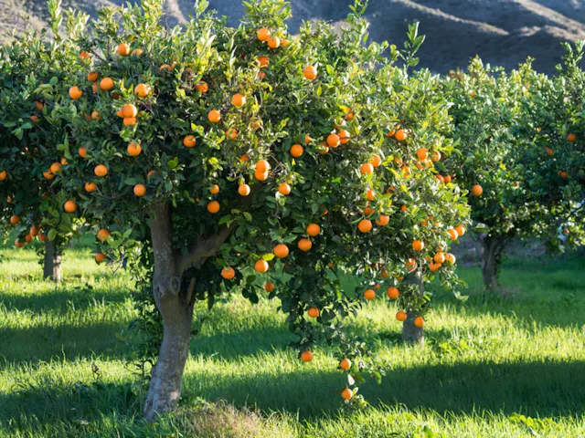

Climate Mitigation for Smallholder Farmers
February 1, 2024

Climate Mitigation Efforts for Zambian Smallholder Farmers: A Path to Sustainability
February 13, 2024
Kenyan Fishermen Response to Climate Change
February 8, 2024

Zambian Approach to Climate Change
February 7, 2024

Zambian Maize at the Mercy of Climate Change
February 7, 2024

How do Pesticides Move in the Environment?
February 6, 2024

Prerequisite of successful weed management programme
February 5, 2024

Effect of herbicides in relation to environment
February 4, 2024